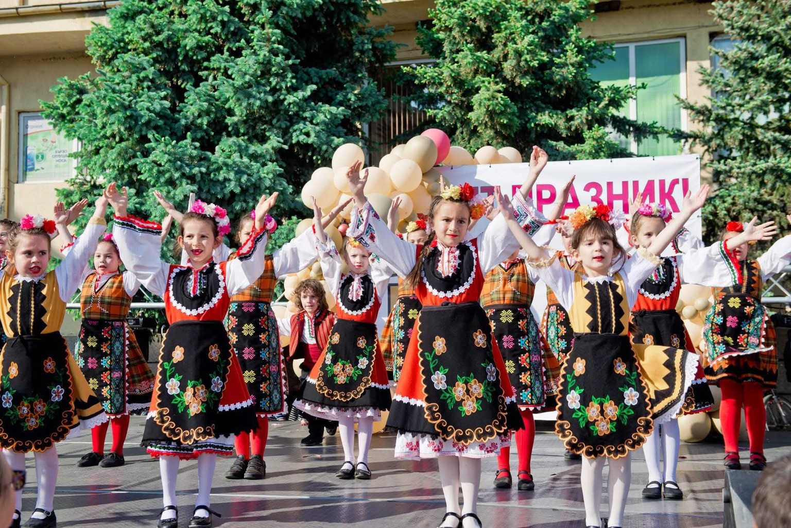
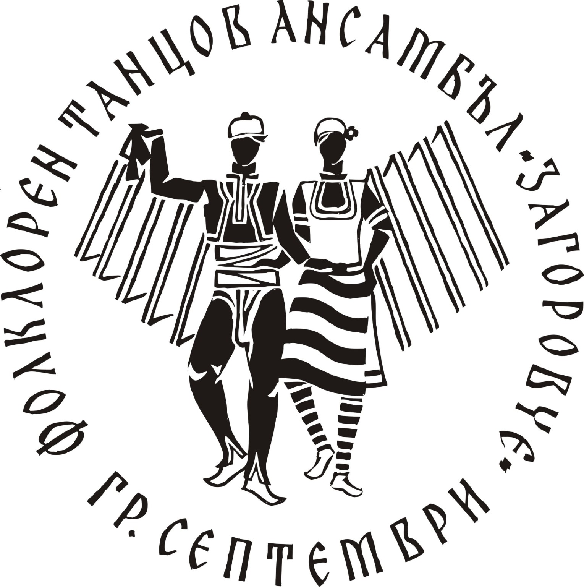
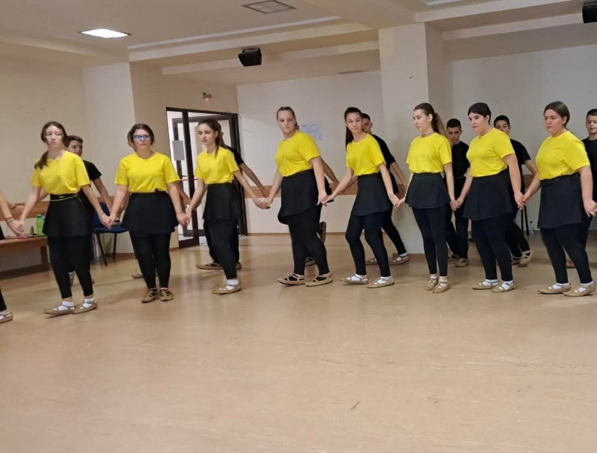
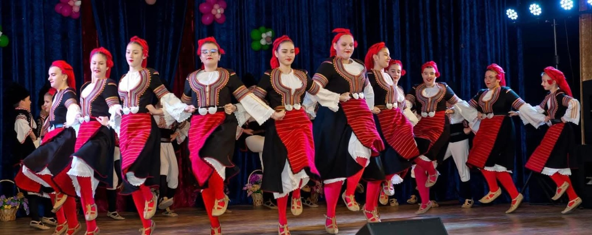
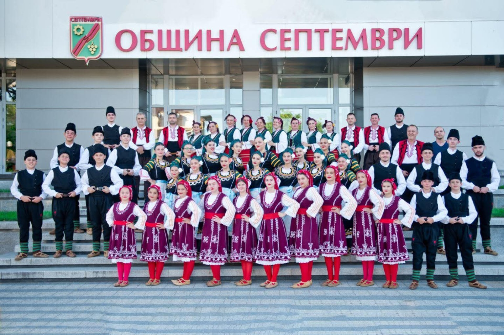
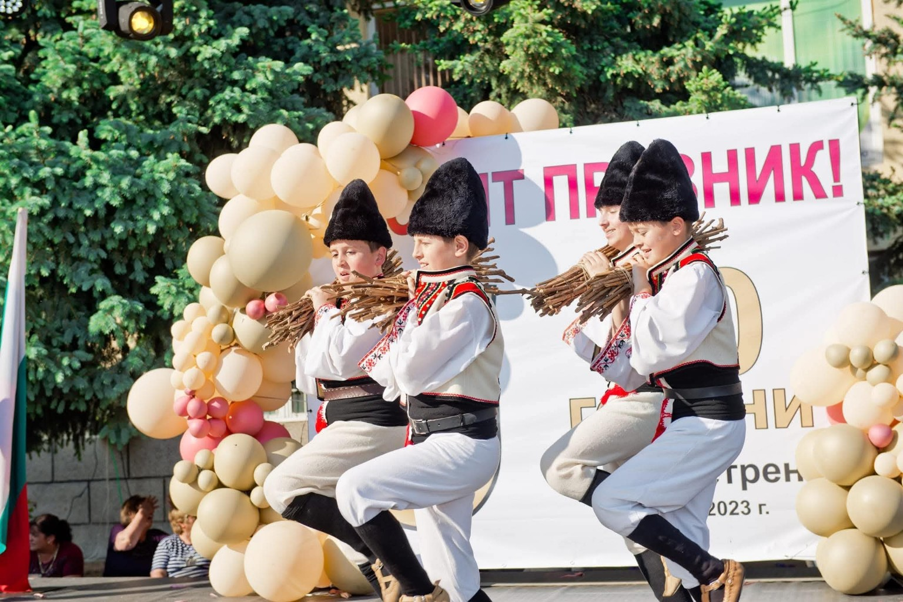
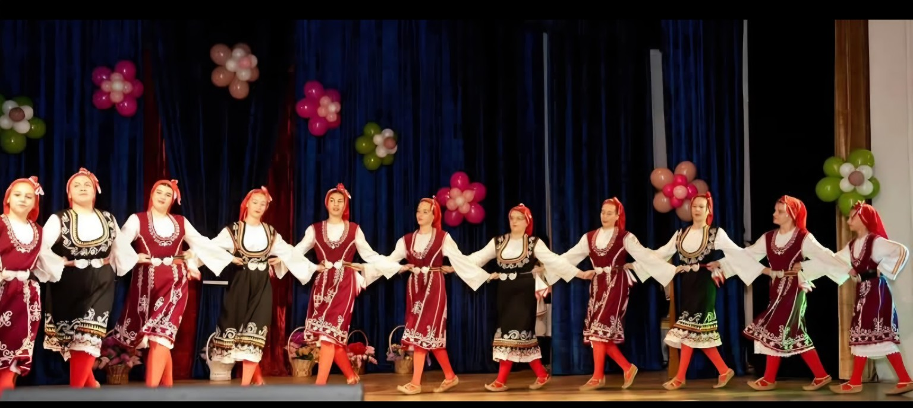

Детски групи
Първи стъпки в магията на българския народен танц.

ГРАД СЕПТЕМВРИ
Съхраняваме българския фолклор и предаваме любовта към народните танци на следващите поколения.
Научете повечеФолклорен танцов ансамбъл „Загоровче“ от град Септември обединява хора, които обичат българските народни танци, музика и традиции. Чрез репетиции и сценични изяви ансамбълът съхранява и популяризира богатството на фолклорното ни наследство.
От 1985 година до днес – поколения, обединени от любовта към българския фолклор.
Фолклорен танцов ансамбъл „Загоровче“ води началото си от есента на 1985 г. Тогава в читалище в град Септември се ражда идеята градът да има свой танцов състав. Първите стъпки са направени под ръководството на Стоимен Писков.
Ансамбълът носи древното име на града – Загорово. През годините с него работят хореографите Агрипина Войнова, Милена Ламбрева и Йордан Зеленгоров. Сред корепетиторите са Здравко Николов и Илия Чалъков. Техният труд, заедно с подкрепата на организатори и съмишленици, помага на състава да се утвърди като емблема на Септември и като един от разпознаваемите фолклорни колективи в региона. Ръководители на състава в момента са Йордан и Цветозар Зеленгорови.
Първоначално ансамбълът обединява деца. През март 2002 г. към него се присъединява и група за танцьори над 18 години, с което се създава възможност участниците да продължат заниманията си и след детската възраст. От 2003 г. съставът развива самостоятелна дейност и се регистрира като Сдружение за музикално и танцово изкуство „Загоровче“. През 2006 г. е създадена певческата група, а през 2007 г. – група за фолкфитнес.
В ансамбъла участват над 150 души – певци и танцьори на възраст от 5 до 65 години. Работата е организирана в групи за деца, младежи и възрастни, както и в певческа формация. За много от децата „Загоровче“ е място, където развиват творческите си способности, учат се на отговорност и изграждат приятелства, докато опознават българските традиции.
Репертоарът включва песни и танци от петте етнографски области на България – шопска, пиринска, тракийска, добруджанска и северняшка. В него присъстват хумористични, сюжетно-тематични и дивертисментни произведения. Чрез сценичните си програми участниците пресъздават народни обичаи и сюжети, а песните и танците предават фолклорното наследство на следващите поколения.
Съставът има над 3 200 концерта в България и чужбина. Участвал е в международни фестивали в Сърбия, Турция, Кипър, Румъния, Северна Македония, Гърция, Босна и Херцеговина, Русия, Германия, Черна гора, Италия и Чехия. Тези срещи представят българския фолклор пред разнообразна публика и създават трайни контакти с ансамбли от други страни.
Още през 1990-те години „Загоровче“ печели отличия на национални детски фолклорни форуми. Сред ранните признания са лауреатските звания от Орфеевите празници в Смолян през 1993 и 1995 г., наградите от конкурса „Децата на България танцуват“ в Разград и отличията от фестивала „Орфеево изворче“. През 1999 г. ансамбълът е лауреат на международния фестивал в Анталия, а през 2000 г. получава приз за най-добър ансамбъл на фестивала „Онур Белгези“ в Кипър и първа награда на „Орфеево изворче“ в София.
През 2002 г. съставът получава почетния знак на Старопланинския събор „Балкан фолк“ и първа награда на „Орфеево изворче“. През следващите години отличията се множат: първи места и златни медали на фестивали в Брацигово, София, Неделино и на „Бобфест“, както и награди за хореографска композиция и изпълнение на детски фолклорни форуми. През 2007–2009 г. ансамбълът е сред лауреатите на фестивали в Свиленград, Раднево, Пазарджик, Охрид, Видин и Румъния.
През 2010–2014 г. танцьорите печелят първи места и големи награди на международни конкурси в Хасковски минерални бани, Банско, Дрен и Пловдив. Сред резултатите са Гран при и призови места за масови фолклорни танци на фестивала „Дъга от таланти“, както и отличия от фестивали в Турция и Република Македония.
През 2017 г. „Загоровче“ получава лауреатска първа степен и почетен знак на Черноморския събор „Евро фолк“, награда за принос към съхранението на българските традиционни изкуства и първо място на фестивала „Утринна звезда“ в Банско. Същата година хореографът Йордан Зеленгоров и част от възпитаниците му гостуват в Москва по покана на ансамбъл „Солнышко“, където провеждат майсторски класове по български народни танци и получават почетни грамоти. През 2018 г. ансамбълът печели първи места и Гран при „Златен Орфей“ на Балканския шампионат по фолклор „Еврофолк – Жива вода“ в Хисаря, както и първи места в двете възрастови групи на „Надиграване в Чирпан“.
От създаването си ФТА „Загоровче“ съчетава сценичното изпълнение с възпитателна и общностна дейност. В него се срещат поколения изпълнители, които пазят българския дух чрез танца и песента. Натрупаните участия и отличия свидетелстват за дългогодишен труд, а приемствеността между децата, младежите и възрастните поддържа ансамбъла като важна част от културния живот на Септември.
Място за танци, приятелства и любов към традициите.

Първи стъпки в магията на българския народен танц.

Усвояване на танци и подготовка за сценични участия.

Споделяме красотата на фолклора с публиката.
Моменти от живота на ансамбъла.



Ансамбълът участва в културния живот на град Септември и в събития, посветени на българския фолклор. Тук ще публикуваме новини, предстоящи концерти, фестивали и отличия.
Обичаш българските народни танци? Стани част от ФТА „Загоровче“ – гр. Септември! За информация за групите, репетициите и възможностите за записване се свържи с нас.
Телефон за информация: 0897 686 879
ФТА „Загоровче“
гр. Септември, България
За информация относно репетиции и записване: 0897 686 879.